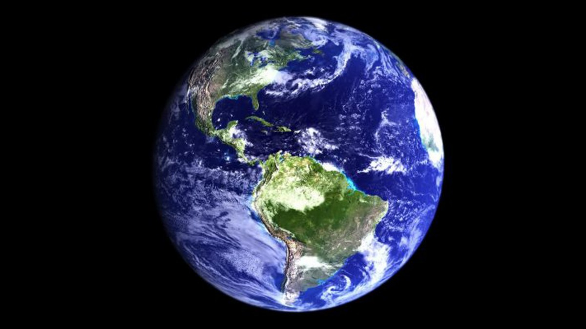
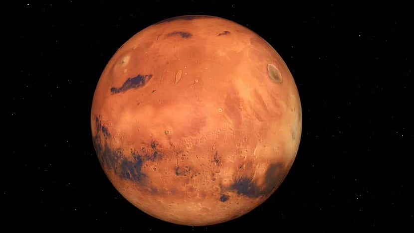
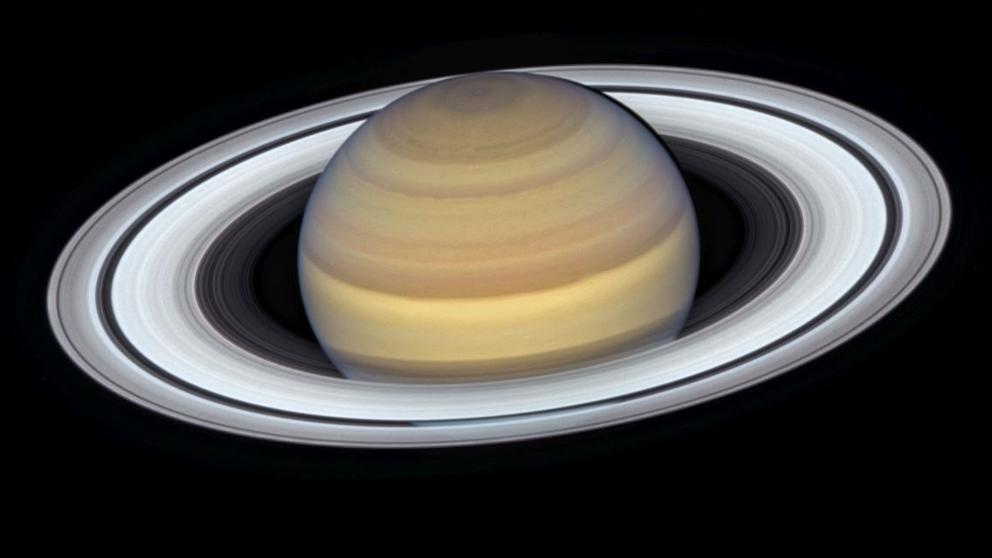
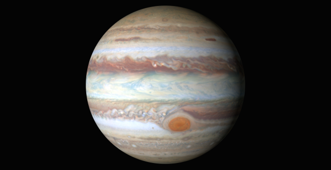
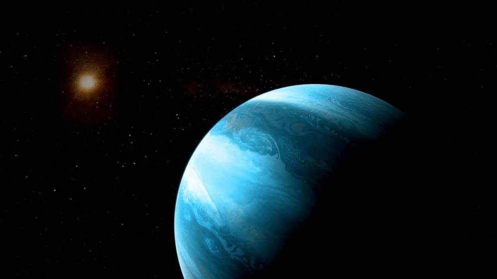

Planetas: Maquetación Flex
para diseño web
Inicio
Galería
Mapas
Sobre
Nosotros
Contacto

Es el más denso y el quinto mayor de los ocho planetas del sistema solar

El planeta rojo Marte

Saturno y sus anillos

Es el planeta más grande del Sistema Solar

Un exoplaneta ha sido descubierto
C/Niebla
Cadiz
Todas las fotos realizadas por @pekechis bajo la Licencia CC BY-SA